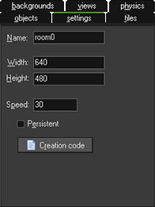
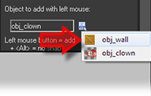

Tutorial
Page 10 of 15
Adding A Room
Now that we have created the game objects there is one more thing to do. We need to create the room in which the game takes place.
For most games, designing effective rooms (the "levels" of the game) is a time-consuming task because here we must find the right balance and progression in the game. But for Catch the Clown the room is very simple: a walled
area with one instance of the clown object inside it.
To start with, from the drop down Resources menu in the main GameMaker window, choose Create Room. This will create a room and open the room proprties window. On the left you see some
tabbed pages, and here you should select the tab labeled Settings.

Now follow these steps:
- In the Name field type in "rm_main". In the Caption for the room field type ‘Catch the Clown’.
- Select the objects tab. Enlarge the window somewhat such that you can see the complete room.
- At the top odf the room editor, make sure the value for Snap X and Snap Y is 32, as the size of our sprites is 32x32 pixels and this makes it easier to place the sprites at the correct locations.
- On the left you can see the image of the clown object, which is the currently selected object. Place one instance of it in the room by clicking with the mouse somewhere in the centre of the grey area.
- Click on the icon with the menu symbol next to the field "obj_clown". Here you can select which object to add, and you should now select obj_wall.

- Click on the different cells bordering the room to put instances there. To speed this up, you can press and hold the <Shift> key on the keyboard and drag the mouse with the mouse button pressed (it is recommended that
the option Delete Underlying is switched on for this so as to avoid placing more than one instance in the same position). You can remove instances using the right mouse button and selecting Delete from the
subsequent pop-up menu, or by holding down the <Control> key while right clicking.
When you are happy with the results, you should click on the green tick at the top left of the window to close and save your room.
Click on the Next button to go to the next page of the tutorial.